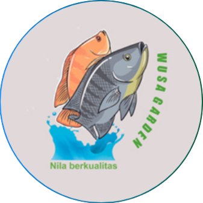

Wusa
Garden
Beranda
Simulasi Bioflok
Beranda
Simulasi Bioflok
POOL SIZE
Ukuran Kolam
Panjang Kolam (m)
Lebar Kolam (m)
Volume Kolam (m³)
Padat Tebar (ekor/m³)
USE OF MATERIALS
Penggunaan Bahan
Volume Kolam (m³)
Probiotik (gr)
Molase (ml)
Garam (gr)
Kapur Dolomit (gr)
FEED USE
Penggunaan Pakan
Jumlah Ikan (ekor)
Berat Rerata Ikan (kg)
Penggunaan Pakan (kg/hari)